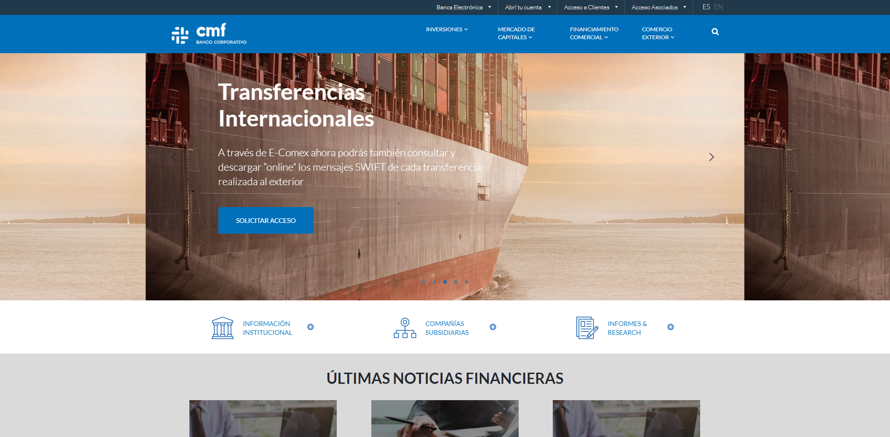
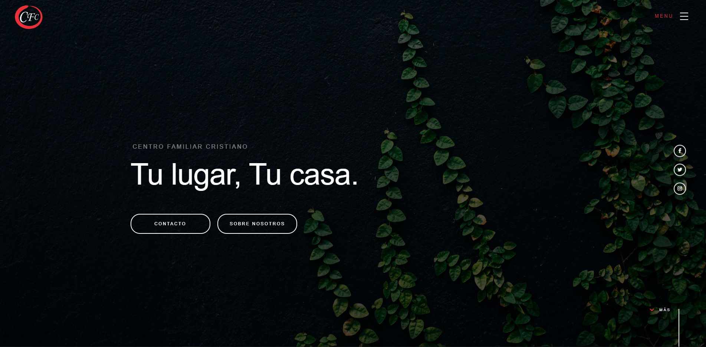
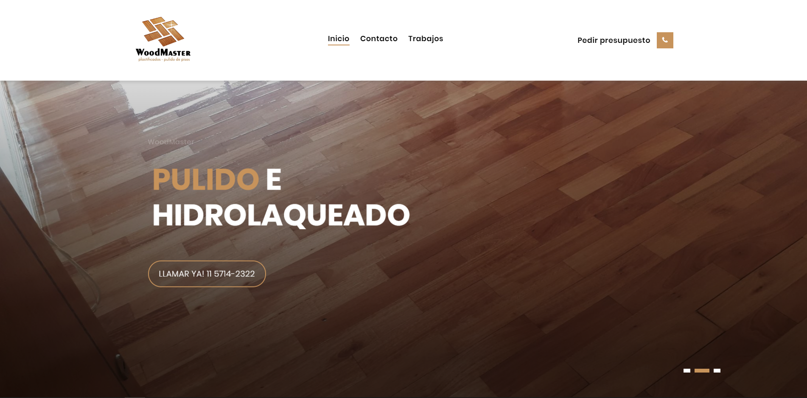
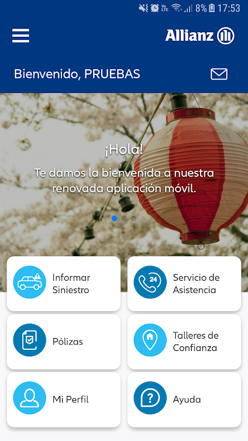
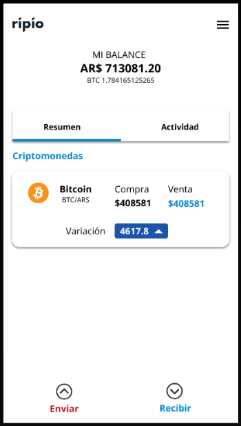

[WEB] - www.jeanellejuarez.com/
what?: Jeanelle es diseñadora independiente de moda, en conjunto desarrollamos su blog personal.
objetivo: Ella quiere lograr una audiencia grande y consistente. Además su meta en 2019 es convertir su blog en una tienda online para que su marca crezca.
diseño: Utilizamos WordPress como motor del blog, lo que le permite a ella poder modificar los estilos de una manera intuitiva sin tener que saber de programación ni diseño, además le permite subir contenido como posts e imagenes facilmente.

[WEB] - www.bancocmf.com.ar/
what?: Participé en el proyecto de construcción del sitio institucional del Banco Cmf, junto a Abs-ti SA
objetivo: Es un sitio meramente institucional, donde los clientes del Banco pueden consultar todo tipo de información e iniciar algunos trámites.
diseño: Utilizamos WordPress para optimizar las herramientas de SEO y seguridad online del sitio.
[WEB] - www.ministerioscfc.org/
what?: Es un sitio institucional de una Iglesia Cristiana con sucursales en distintas partes de Argentina y sudamerica.
objetivo: Mostrar a los visitantes la visión de la Iglesia, la información básica de las sucursales con sus ubicacion y horarios de servicio y mostrar las distintas áreas donde se desarrollan como comunidad.
diseño: El patrón de diseño que utilicé para el sitio, es la disposición "Landing Page" donde el usuario puede consumir toda la información mas relevante en una sola página, sin tener que distraerse navegando por diferentes sub-paginas.
[WEB] - www.woodmaster.com.ar/
what?: Woodmaster es una empresa familiar. Ellos se dedican a la colocación, pulido y plastificado de pisos de madera.
objetivo: Es un sitio institucional con orientación a la llamada a la acción para captar clientes.
diseño: La idea fue armar un diseño limpio y moderno, pero con colores muy aplicados a la madera y la artesanía.
[APP] - Allianz Asegurados
what?: Allianz es una empresa internacional de seguros, junto con Abs-ti y un equipo excelente de desarrollo creamos su app para iOS y Android.
objetivo: Es una app que tiene muchas funciones, entre ellas: Reportar un siniestro, consultar pólizas, pedir una grúa de emergencia y más..
diseño: El estilo de diseño es muy moderno y se buscó ser abiertos a ambas plataformas, tanto iOS como Android.
[APP Simulador] - Ripio Wallet
what?: Ripio es una empresa argentina que ofrece el servicio de compra, venta y almacenamiento de criptomonedas.
objetivo: La app que desarrollé es un rediseño de la app actual, con funciones limitadas. Simula el envío y almacenamiento de bitcoins.
diseño: El diseño está basado en "flat design" y cards, busca tener una impronta minimalista pero con detalles fuertes.
